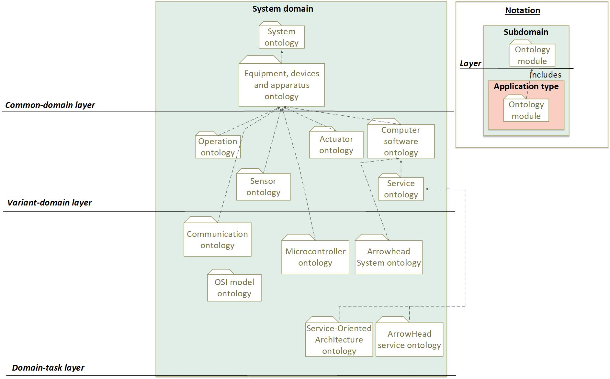
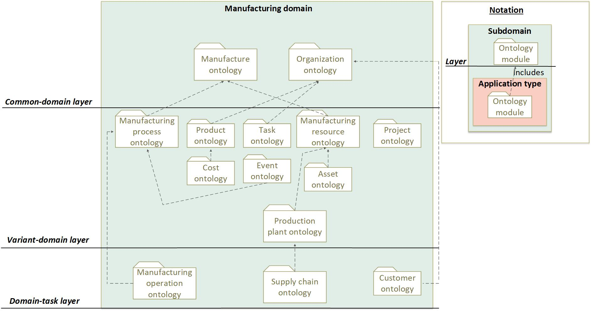

I40GO ontology structure
The knowledge of the represented domains is divided into ontology modules that represent the knowledge of a particular topic of the subdomain.
Specifically, the current release of I40GO consists of 29 ontology modules in total.
The ontology modules of I40GO are classified into three abstraction layers. These layers separate the common domain knowledge that is relevant to most of process management applications from the variant domain knowledge that is relevant to certain applications. With this structure, ontology developers can select
the knowledge of I40GO at the proper level of abstraction to develop application ontologies for energy management applications.
Details about each layer and the ontologies they contain can be found below.
Common-domain Layer
The common-domain layer includes the common knowledge of each domain. Therefore, the ontology
modules of this layer represent top-level domain concepts. The following are the ontology modules of the I40GO ontology in the common-domain layer:
- System ontology: The 'System' ontology module represents data about systems. In the context of the Industry 4.0 Global Ontology a system is considered as a set of interrelated elements (i.e., technical systems, network systems) considered in a defined context as a whole and separated from their environment. A system is generally defined with the view of achieving a given objective, for example by performing a definite function.
- Equipment, devices and apparatus ontology: The 'Equipment, devices and apparatus' ontology module represents data about systems. In the context of the Industry 4.0 Global Ontology a system is considered as a set of interrelated elements (i.e., technical systems, network systems) considered in a defined context as a whole and separated from their environment. A system is generally defined with the view of achieving a given objective, for example by performing a definite function.
- Manufacture ontology: The 'Manufacture' ontology module includes data about manufacture, that is, the production of products for use or sale, using labour and machines, tools, and chemical or biological processing or formulation. It also includes relevant concepts related with the Industry 4.0. The Fourth Industrial Revolution (or Industry 4.0) is the ongoing automation of traditional manufacturing and industrial practices, using modern smart technology. Large-scale machine-to-machine communication (M2M) and the internet of things (IoT) are integrated for increased automation, improved communication and self-monitoring, and production of smart machines that can analyze and diagnose issues without the need for human intervention.
- Organization ontology: The 'Organization' ontology module data about organizations, their internal structure (i.e., departments and divisions that compound the organization) and the roles that their departments/units and individuals have.
Variant-domain Layer
The variant-domain layer includes the variant domain knowledge reused only in several applications. As the knowledge of this layer is
relevant for fewer applications, the ontology modules include more specific knowledge. Thus, they extend and include the knowledge of the common-domain
layer ontology modules. The following are the ontology modules of the I40GO ontology in the variant-domain layer:
- Operation ontology: The 'Operation' ontology module represents information about operations: combination of activities necessary to permit an installation to function. The represented operations include switching, controlling, monitoring and maintenance as well as any work activities.
- Sensor ontology: The 'Sensor' ontology module represents data about sensor devices.
- Actuator ontology: The 'Actuator' ontology module represents data about sensor devices.
- Computer software ontology: The 'Computer Software' ontology module represents the data about software applications.
- Service ontology: The 'Service' ontology module represents the data about the functionalities provided by devices.
- Manufacturing process ontology: The 'Manufacturing Process' ontology module represents data related to business processes and the sub processes/activities they encompass. Includes the steps through which raw materials are transformed into a final product. Also called manufacturing engineering.
- Product process ontology: The 'Product' ontology module represents data about the product supplied by the organization to the customer and their application areas. The result of a process; an artefact that is produced, is quantifiable, and can be either an end item in itself or a component item.
- Cost ontology: The 'Cost' ontology module represents data about the cost of manufacturing products.
- Task ontology: The 'Task' ontology module represents data about required, recommended, or permissible actions intended to contribute to the achievement of one or more outcomes of a process.
- Event ontology: The 'Event' ontology module represents data about events and the elements that generate them. A noteworthy occurrence that has a location in time and space, and does not have duration.
- Manufacturing Resource ontology: The 'Manufacturing Resource' ontology module represents data about the resources (i.e., tools, human resources) used during the manufacturing process.
- Asset ontology: The 'Asset' ontology module represents data about assets. An asset is a physical entity or digital entity that has value to an individual, an organization or a government. This ontology module also provides a representation about the Asset Administration Shell and associated concepts. Includes the administration of the asset concept, the functionalities of the administration shell, assets and sub models that describe an asset.
- Project ontology: The 'Project' ontology module represents data about a project (or program) is any undertaking, carried out individually or collaboratively and possibly involving research or design, that is carefully planned (usually by a project team) to achieve a particular aim.
- Production plant ontology: The 'Production Plant' ontology module represents data related to plant topology, including the concrete equipment of an actual project – the instance data.
Domain-task Layer
The domain-task layer includes the domain knowledge reused in specific applications. The following are the ontology modules of the I40GO ontology in the domain-task layer:
- Communication ontology: The 'Communication' ontology module represents data about devices used for information transfer according to agreed conventions.
- OSI model ontology: The 'OSI model' ontology module represents data about the Open Systems Interconnection model (OSI model).
- Microcontroller ontology: The 'Microcontroller' ontology module represents data about microcontroller devices.
- ArrowHead System ontology: This ontology represents data about systems of the Arrowhead framework The Arrowhead Framework is addressing IoT based automation. The approach take is that IoT's are abstracted to services. This to enable IoT interoperability in-between almost any IoT's.
- Service-Oriented Architecture ontology: The 'Service-Oriented Architecture' ontology module represents data about Service-oriented architecture (SOA). In the conext of the ontology, SOA is a style of software design where services are provided to the other components by application components, through a communication protocol over a network.
- ArrowHead Service ontology: The 'Arrowhead Service' ontology module represents data about services in the Arrowhead framework context.
- Manufacturing Operation ontology: The 'Manufacturing Operation' ontology module represents data about manufacturing operations, including machining operation as well as control or assembly.
- Supply Chain Operation ontology: The 'Supply Chain' ontology module represents the data about the supply chain of product plants.
Apart from the listed ontology modules, DABGEO includes a
ontology mapping file (in .owl format) that includes the equivalence relations between elements from existing energy ontologies. This file is used to provide interoperability between applications that use these ontologies.
Ontology Description Diagrams
The following diagrams resume the Industry 4.0 ontology structure and ontology module dependencies in each domain.
System domain:

Figure 1: Representation of the system domain.
Manufacturing domain:

Figure 2: Representation of the manufacturing domain.